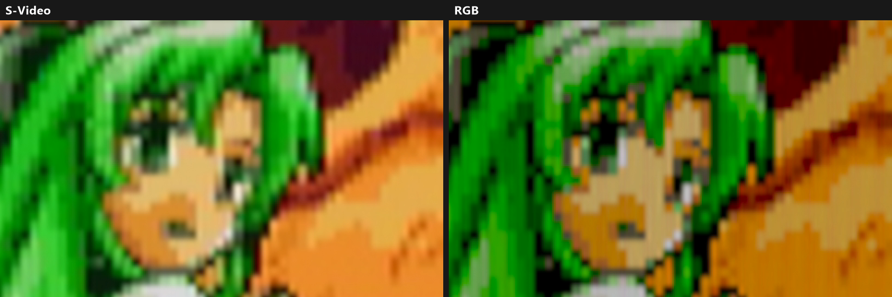
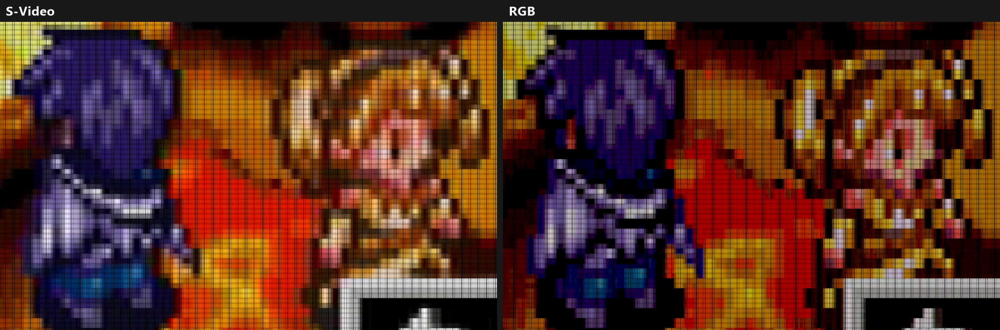

TVスワンを RGB で映す（はじめての人向けの案内）

バンダイの TVスワンを、RGB という方式で映せるようにしました。このページは、「何ができるのか」「何が必要なのか」を、できるだけやさしくまとめた案内です。
作業の手順や、細かい数字は、詳しい記録に書いてあります。
TVスワンで、もっときれいに映したい
TVスワンは、ワンダースワンカラーのゲームを、テレビに映すための機械です。テレビとは、黄色い線（コンポジット）か、S端子の線でつなぎます。
S端子でも、十分きれいに映ります。ただ、よく見ると、色と色の境目が、少しにじんでいます。 赤い服と青い背景が接する所や、小さなキャラクターの輪郭などです。
これは、S端子という方式の性質です。S端子は、「明るさ」と「色」を分けて送ります。明るさは細かく送れますが、色は、大まかにしか送れません。そのため、色の境目がぼやけます。
RGB という送り方
映像を送る方法には、もう一つ、RGB があります。赤・緑・青の3つの色を、別々の線で、そのまま送る方法です。色を大まかにまとめないので、境目がにじみません。
TVスワンには、RGB の端子はありません。ところが、中に入っている部品を調べると、RGB で出す機能を、もともと持っていることが分かりました。使われていないだけだったのです。
どうやって切り替えるのか
TVスワンは、電源を入れると、中の部品に「S端子で出しなさい」という指示を送ります。この指示を、あとから「RGB で出しなさい」に書き換えれば、RGB の映像が出てきます。
書き換えには、指先に乗るほどの小さなコンピューター（Raspberry Pi Pico、千円ほど）を使います。これを TVスワンの基板に、3本の線でつなぎます。電源を入れると、数秒後に、自動で RGB に切り替わります。
映像は、今ある S端子と黄色の端子から、そのまま出てきます。 端子を増やす必要はありません。Pico を外せば、元の TVスワンに戻ります。
どのくらい変わるのか
どの画像も、左が S端子、右が RGB です。画面の一部を、2倍に拡大しています。



変わるのは、色の境目です。ドットの一つ一つが、はっきり分かれて見えるようになります。一方、白と黒の文字の輪郭は、S端子でも十分にくっきりしていて、ほとんど変わりません。
必要な物
| 物 | 目安 |
|---|---|
| Raspberry Pi Pico | 千円ほど |
| 抵抗、細い線などの小さな部品 | 数百円 |
| RGB 用のケーブル（自作するか、作ってもらう） | 部品だけなら 2,000 円ほど |
| はんだごてなどの道具 | 持っていなければ、別に必要 |
| RetroTINK 4K（映す側の機械） | 下の「先に知っておいてほしいこと」を読んでください |
先に知っておいてほしいこと
はんだ付けが必要です。 基板の、米粒より小さな部品を1個、付け替えます。そのほかに、線を3本つなぎます。慣れていない場合は、詳しい人や、改造を請け負う所に頼むのが安全です。頼むときは、詳しい記録のページを見てもらってください。
映す側の機械を選びます。 この方法で出てくる映像には、少し癖があります。そのまま映すと、画面がとても暗くなります。私は、RetroTINK 4K という機械の設定で、その癖を打ち消しています。ほかの機械（ほかのアップスケーラーや、RGB 対応のモニターなど）では、暗く映るかもしれません。ほかの機械では、確かめていません。
劇的には変わりません。 S端子の時点で、TVスワンはかなりきれいに映ります。RGB にして変わるのは、色の境目の鮮やかさです。大きな画面で、ドット絵を細かく見たい人には意味がありますが、「別物になる」ほどの変化ではありません。
貴重な機械です。 TVスワンは、数の少ない機械です。改造は、自己責任でお願いします。私が確かめたのは、手元の1台だけです。
もっと詳しく
分からない所や、試してみた結果があれば、ぜひ教えてください（X：@TEMJISO）。